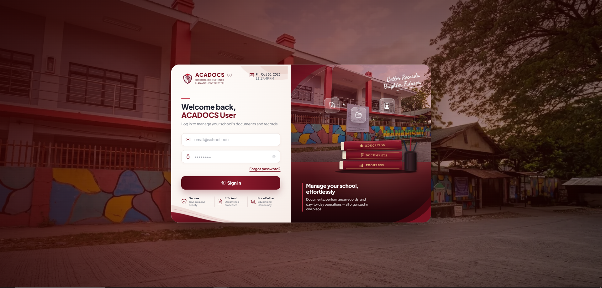
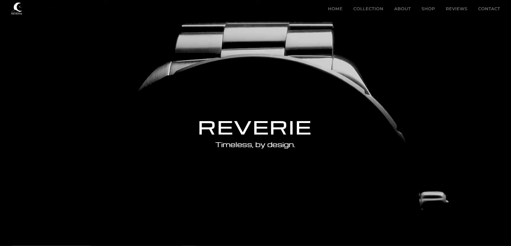

Front End Development
Responsive, fast websites and web interfaces built from your design or idea. I turn layouts into clean pages using React, Tailwind CSS and Bootstrap.
Let's Talk
I am Niel Francis Benedict J. Betita, a fourth year BSIT student at Batangas State University – ARASOF Campus. I enjoy building modern and visually appealing websites, mobile applications, and software systems. I can take on Front-End, Back-End, or Full-Stack Development roles depending on the needs of the project or team. I am always eager to learn new technologies, improve my skills, and create practical solutions that deliver a great user experience.




Hover a project to preview. Click to open
Hover or click a slice of the wheel to see what is on it.
Hover or click a slice to stop the wheel.
Goals, users, scope.
Roadmap, stack, milestones.
Wireframes and UI.
Build in small, reviewable steps.
QA, performance, fixes.
Deploy and support.
Responsive, fast websites and web interfaces built from your design or idea. I turn layouts into clean pages using React, Tailwind CSS and Bootstrap.
Let's TalkThe logic behind your site: databases, user accounts, admin panels and APIs. Built with PHP (CodeIgniter 4), Node.js or Python, with MySQL for your data.
Let's TalkCross-platform mobile apps for iOS and Android from a single codebase, built with React Native and TypeScript.
Let's Talk